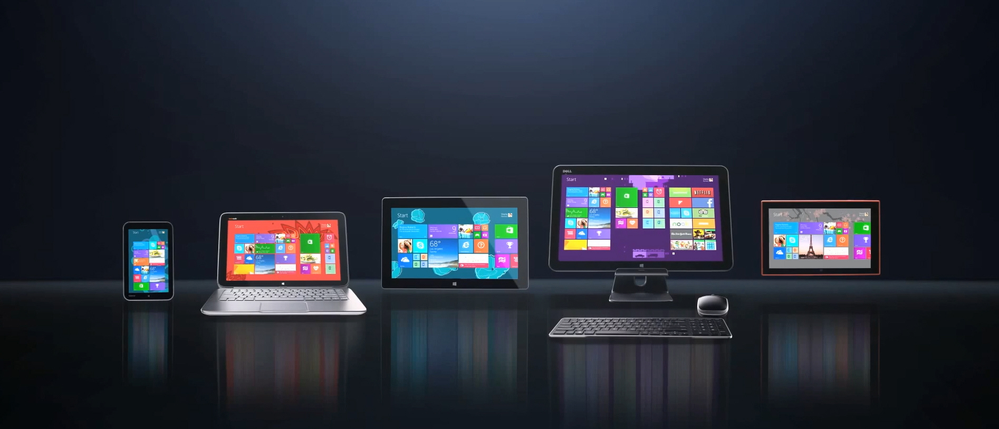

Architecture of Universal Windows Platform is most exclusive with the center of gravity which is One Windows Core. Now the whole development will follow the common refactored core that will common for all the windows Releases. It’s all about One Core, One Hardware Platform, Universal Hardware Driver and Standalone Network and I/O.
For the First time, there is a true binary compatibility with loads of platforms. Microsoft has changed the tradition of shipping different sets of Operating System for different types of hardware devices, now it is only one core that is common for all the windows releases for all different devices. From small size IoT device up to large size surface hub including gaming station like Xbox, they all shared a single Binary.

Windows Core is very small and short subset of all the versions of windows. Now Windows have one single codebase rather than a shared codebase and the usage on an entire range of devices. Hence the apps that were Universal Apps had different and separate binaries whereas now the Windows Core has one single binary across all platforms.
The UAP (Universal App Platform) is a collection of versions. Now the App will not develop for the OS or the version of an OS but it will target a version of UAP. The UAP is built on the Windows Core that is the collection of low level APIs that are arranged in the form of Contracts. These Contracts are a kind of assurance given by Microsoft to App Developers stating that they can now start building against the UAP. Microsoft will ensure that no matter what Windows platform and device the users are on, they will be able to run it and Microsoft will ensure that the App runs smoothly on the previous compatible version as well.
This essentially means that the developers will no longer write the application targeting Windows, rather they will write it against the UAP and Microsoft will guarantee that the applications will run on all platforms.
UAP ensures that no matter what you target and whichever version you target. You will get the application Running. So, developers don't need to worry much about which specific Windows to test on.
Let us take a quick view on app development convergence journey. An Image explain it briefly.
See, how the app development was so diverse in different platforms. Each platform’s app had its own way of development. For developers it was extremely difficult to build app for other platforms.
Before Windows 8, the way of development was extremely lost. Every platform had its own ways of development with unique type of code.
After Windows 8, Platforms come closer. Perhaps still the development was quite different in different platforms.
In Windows 8.1 the concept of Universal App was introduced first time with Windows 8.1 and Windows Phone 8.1 with shared code. i.e. there was single project where three different projects exist, one for Windows 8.1, one for Windows Phone 8.1 and a shared project which contained the unique code which were run as platform specific when the app run any of the platform.
But from Windows 10, the whole climate of development is changed. Now Windows 10 developer code for once for only platform that is called Universal Windows Platform which run on all Windows devices.
So it’s all about Single Binary, running on any device, testing for capabilities and adjust to all devices.
If I do say to myself, it’s extremely cool! Now we, the Windows 10 developers can proudly stand among the developers’ community. Because now the developer story is;
A developer writes for iPad & iPhone
A developer writes for all supported devices
A developer writes for each devices
A developer writes for every device
So that’s the beauty of Windows 10 Development! Isn’t it?
But again, technically you will not build for Windows 10, you will build for range of version of UWP or Universal Windows Platform.
It’s up to 96% of an app code is same that is compatible across all the devices. The remaining 4% is different according to different features of specific platforms, which is smartly handled by Visual Studio 2015.
Perhaps Sometimes that default UWP that guarantees to run across all the devices is not enough! So, where Microsoft extend the UWP API set with device family specific also. As one device family may use different set API than other device families. So to access those with extension SDKs for the platform. The extension SDK is not like adding an extension to your project, it’s the package you need to create for that device family. Because extensions don't invalidate binaries on other devices!
For Development on Windows 10! Traditional Microsoft technologies are not the only way to create Windows apps like XAMAL & C#!
And Yes! Now you can build native app on Windows 10 Platform by using Bridging Technologies. (Again That’s is the separate topic, required separate ground to explain)! At this point I can tell you that, now you can develop apps for iOS, Android, Web and Win32 desktop by staying at Windows Platform and code. Not only that, by staying on Microsoft Visual Studio now you can code in Objective C for iOS, you can code in JAVA for Android by taking care of their platform specific design.
For the Design point of view, you have got few awesome thing;
Flexible layout responds to small changes. Many controls handle basic responsiveness
Smart layout adjusts to large changes. Features like visual states aid in this design
A device-specific app can simplify design. Some devices have unique design languages
Not only that, the code is also adoptive;
Also make the app test compatible at run time by using Adaptive Code to light-up your app on specific devices.
You can end with lots of ‘if’s! That what your app will run. What device family which your app is going to target. So if you don’t need any API or extension of any device family which your app is not supporting then you may exclude them and it will not compatible for that.
And Combine as one they work as one UAP;
So the device families you choose determines which APIs you can call freely! That create One simple, unified, integrated development environment!
So! Long story short. It’s all about Universal Windows Platform;
One Windows core for all devices.
Apps run across every device family
Single submission flow and dashboard.
Global reach, local monetization. Consumers, Business and Education.
For Detailed Understadning from Windows 10 experts, take a view on the great online session named A Developer's Guide to Windows 10 App Development given bellow;
Copyright © 2015 - Designed by Sajid Ali Khan